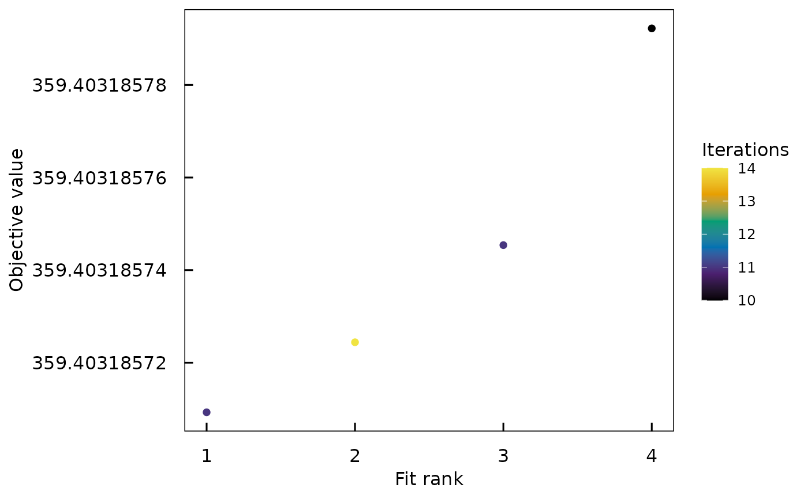

Runs em() from fits starts, the first at init, the others
perturbed by normal noise of standard deviation sd (on the log scale for
concentrations and slab standard deviations, on the logit scale
for slab probabilities), and returns the best fit.
Arguments
- obj
Objective of the data,
normL2()ornormT()of the modelg * x * p, without terms for the random effects.- random
The random effects,
randomEffects()of the parameter transformation or ofp.- init
Named numeric start with the parameters of
objthat are neither random effects nor created by the effect formulas (those start at 0). It may also set those and the hyperparameters:omega_<a>_<a>, the log of the diagonal entry of the Cholesky factor ofOmega(the log standard deviation of an uncorrelated random effect), andomega_<a>_<b>, the entry in rowaand columnbbelow the diagonal, withaandbthe stems of the random effects withouteta_, as inomega_cl_cl;prob_*andtau_*(spike and slab),concentration_*andtau_*(Dirichlet process), named<kind>_<grouping>and numbered_1,_2, ... where a grouping has several blocks. Anemfit asinitgives the start: the estimates,fixedvalues and random effects of that fit, without those it set to 0, and with sparse random effects the inner modes.- fixed
Named numeric of parameters held fixed.
- method
"focei"(default),"quadrature","laplaceEM"or"saem".- control
List of options; other entries are an error.
sdstart of the standard deviations of the random effects, default 0.3.
innerControlthe trust region of the modes; it stops where the Newton step is below
steptol, default 1e-8.trustControlthe outer trust region; it stops where the predicted change of -2 log L is below
mtol, default 1e-5.secondOrderCorrectionthe derivative of the volume term, default
TRUE.derivModehow FOCEI gets the second derivatives of the volume term:
"forward-reverse"(default), sweeps for models built withderivMode = c("forward", "reverse", "forward-reverse"), or"forward-forward", the second-order sensitivities of models built withderiv2 = TRUE. Without the mode asked for the fit takes the other, with a message.boundarythe largest rise of -2 log L at which a variance is set to 0, default 0.1,
FALSEfor none. With one grouping and several blocks, a normal random effect that forms a block alone and whose standard deviation ends below 0.1 is dropped and the fit repeated from the estimates; where -2 log L rises by at mostboundary, that fit is returned and names the hyperparameter inboundary.quadrature,saem,sparseFitlists of the sections Quadrature, SAEM and Sparse random effects.
- fits
Number of starts. Default 20.
- cores
Number of fits run in parallel, or
c(fits = , conditions = )as inmstrust(): fits in parallel and cores inside each fit.- sd
Standard deviation of the perturbation of the starts: one number for every parameter, or a vector named by the parameters it perturbs, the others keeping their start.
- verbose
Logical. If
TRUE, print the table of the starts; the fits print no progress. DefaultFALSE.- sparse
"auto"(default),TRUEorFALSE: the outer trust region of FOCEI over normal random effects on the sparse Gauss-Newton Hessian."auto"decides astrust()does.- retry
Logical. If
TRUE(default), a fit that fails with an error, for instance at a start where a steady state ofPimpl()has no stable root, is repeated from a new perturbed start, up tonTriesattempts.- nTries
Maximum number of attempts per start, including the first. Default
10.- keepFits
Logical. If
TRUE, the result hasfits, the fit of every start, or the error message of a failed one, without the model. DefaultFALSE.- which
Positions of the starts to fit, among the
fitsdrawn.NULL(default) fits all. Tasks ofdistributedComputing()that set the same seed and fit disjoint parts fit the starts of one call, andget()joins their results into one.
Value
The fit with the smallest value, of class em, with
multistart, a data frame with a row per start:
startthe position of the start among the
fitsdrawn.value,converged,iterationsof the fit.
gradientthe largest absolute entry of the gradient at the end of the fit.
triesthe attempts it took.
stopthe test that ended the trust region,
"error"where every attempt failed.failureswhy evaluations in the trust region failed, and how often.
error,boundarythe error of a failed start, the variances the fit set to 0.
plotValues() draws it as a waterfall.
Examples
# \donttest{
## Theophylline, 12 subjects: one-compartment model with first-order absorption in closed
## form, log parameters with a normal random intercept per subject, additive error
th <- datasets::Theoph
th$Subject <- as.character(th$Subject)
subjects <- unique(th$Subject)
data <- as.datalist(data.frame(name = "y", time = th$Time, value = th$conc, sigma = NA_real_,
condition = th$Subject))
## second derivatives forward over reverse, the default of em()
dm <- c("forward", "reverse", "forward-reverse")
x <- Xt()
g <- Y(c(y = "amt * Ka / (V * Ka - Cl) * (exp(-Cl / V * time) - exp(-Ka * time))"),
states = "time", modelname = "theoph_obs", compile = FALSE, derivMode = dm,
outdir = tempdir())
#> Overwriting: /tmp/Rtmpr3VxZ8/theoph_obs.cpp
err <- Y(c(y = "sigma_add"), g, attachInput = FALSE, modelname = "theoph_err", compile = FALSE,
derivMode = dm, outdir = tempdir())
#> Overwriting: /tmp/Rtmpr3VxZ8/theoph_err.cpp
## one condition per subject with the subject dose; the effect formula replaces each log parameter
## by an intercept plus a random effect per subject
doses <- tapply(th$Dose * th$Wt, th$Subject, `[`, 1)[subjects]
trafo <- branch(define(NULL, "x <- x", x = c("Ka", "V", "Cl", "amt", "sigma_add")),
table = data.frame(ID = subjects, dose = doses, row.names = subjects))
trafo <- insert(trafo, "amt <- dose", dose = dose)
trafo <- insert(trafo, "x <- exp(x)", x = c("Ka", "V", "Cl", "sigma_add"))
p <- P(insert(trafo, Ka + V + Cl ~ 1 + (1 | ID)), method = "explicit", compile = FALSE,
modelname = "theoph_p", derivMode = dm, outdir = tempdir())
compile(g, err, p, output = tempfile("theoph"))
#> using C++ compiler: g++ [-O2 -DNDEBUG -w -fPIC]
#> reusing 14 unchanged object(s)
obj <- normL2(data, g * x * p, errmodel = err)
init <- c(Ka = 0, V = 3, Cl = 0.7, sigma_add = log(0.5))
## four starts: the first at init, the others perturbed
best <- msem(obj, randomEffects(p), init = init, fits = 4)
best$multistart
#> start value converged iterations gradient tries stop failures error
#> 1 1 359.4032 TRUE 10 0.002975526 1 <NA> <NA>
#> 2 2 359.4032 TRUE 11 0.002859698 1 <NA> <NA>
#> 3 3 359.4032 TRUE 14 0.000496391 1 <NA> <NA>
#> 4 4 359.4032 TRUE 11 0.001513915 1 <NA> <NA>
#> boundary
#> 1
#> 2
#> 3
#> 4
plotValues(best)

# }
if (FALSE) { # \dontrun{
## 20 starts, four fits at a time
best <- msem(obj, randomEffects(p), init = init, fits = 20, cores = c(fits = 4, conditions = 1))
plotValues(best)
} # }